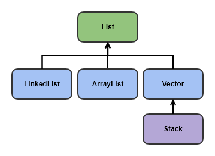
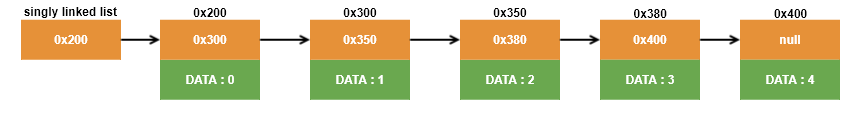
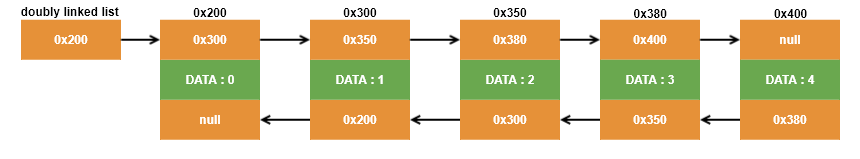
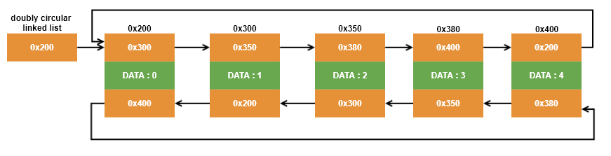

List 인터페이스
List 인터페이스
List 인터페이스는
중복을 허용하면서
저장순서가 유지되는 컬렉션을 구현하는데 사용됩니다.
대표적인 List에 속하는 클래스는 다음과 같습니다.
List 상속 계층도
List 클래스
- ArrayList<E>
- LinkedList<E>
- Vector<E>
- Stack<E>
ArrayList<E> 클래스
ArrayList는 컬렉션 프레임워크에서 가장 많이 사용되는 컬렉션 클래스입니다. ArrayList는 List인터페이스를 구현하기 때문에 데이터의 저장순서가 유지되고 중복을 허용합니다.
ArrayList는
Object배열을 이용해서 데이터를 순차적으로 저장하므로
인덱스를 이용해서 배열 요소에 빠르게 접근할 수 있습니다. 하지만 배열은 크기를 변경할 수 없는 인스턴스이므로,
배열에 더 이상 저장할 공간이 없으면 보다 큰 새로운 배열을 생성해서 기존의 배열에 저장된 내용을 새로운 배열로 복사한 다음 저장됩니다. 물론 이 과정은 자동으로 수행되지만, 요소의 추가 및
삭제 작업에 걸리는 시간이 매우 길어지는 단점을 가지게 됩니다.
다음 예제를 통해서 ArrayList의 기본적인 메서드를 이용해서 객체를 다루는 방법을 학습합니다.
ArrayListEx.java
package kinco.java.std;
import java.util.*;
public class ArrayListEx {
public static void main(String[] args) {
// ArrayList 객체 list1을 생성하여 배열 크기 10을 생성
ArrayList<Object> list1 = new ArrayList<Object>(10);
list1.add(new Integer(5));
list1.add(new Integer(4));
list1.add(new Integer(2));
list1.add(new Integer(0));
list1.add(new Integer(1));
list1.add(new Integer(3));
// ArrayList 객체 list2를 생성하고 list1의 index 1부터 4사이의 값을 저장
ArrayList<Object> list2 = new ArrayList<Object>(list1.subList(1, 4));
print(list1, list2);
// list1과 list2를 정렬
Collections.sort(list1, new Comparator<Object>() {
@Override
public int compare(Object o1, Object o2) {
return ((Integer) o1).compareTo((Integer) o2);
}
}); // list1 정렬
Collections.sort(list2, new Comparator<Object>() {
@Override
public int compare(Object o1, Object o2) {
return ((Integer) o1).compareTo((Integer) o2);
}
}); // list2 정렬
print(list1, list2);
// list1이 list2의 모든 요소를 다 포함하고 있는지 boolean으로 반환
System.out.println("list1.containsAll(list2) : " + list1.containsAll(list2));
// list2에 "B"와 "C"를 추가, 위치를 지정하여 추가 또는 변경
list2.add("B");
list2.add("C");
list2.add(3, "A"); // 3번째 위치에 "A" 추가
print(list1, list2);
list2.set(3, "AA"); // 3번째 위치를 "AA"로 변경
print(list1, list2);
// list1에서 list2와 겹치는 부분만 남기고 나머지는 삭제
System.out.println("list1.retainAll(list2) : " + list1.retainAll(list2));
print(list1, list2);
// list2에서 list1에 포함된 객체들을 삭제 (공통된 요소들을 찾아서 삭제)
for (int i = list2.size() - 1; i >= 0; i--) {
if (list1.contains(list2.get(i)))
list2.remove(i);
}
print(list1, list2);
}
static void print(ArrayList<Object> list1, ArrayList<Object> list2) {
System.out.println("list1:" + list1);
System.out.println("list2:" + list2);
System.out.println();
}
}Console
list1:[5, 4, 2, 0, 1, 3]
list2:[4, 2, 0]
list1:[0, 1, 2, 3, 4, 5]
list2:[0, 2, 4]
list1.containsAll(list2) : true
list1:[0, 1, 2, 3, 4, 5]
list2:[0, 2, 4, A, B, C]
list1:[0, 1, 2, 3, 4, 5]
list2:[0, 2, 4, AA, B, C]
list1.retainAll(list2) : true
list1:[0, 2, 4]
list2:[0, 2, 4, AA, B, C]
list1:[0, 2, 4]
list2:[AA, B, C]ArrayList의 생성자와 메서드
|
ArrayList()
: 크기가 0인 ArrayList를 생성합니다. |
|
ArrayList(Collection c)
: 주어진 콜랙션이 저장된 ArrayList를 생성합니다. |
|
ArrayList(int initialCapacity)
: 지정된 초기용량을 갖는 ArrayList 생성합니다. |
|
ArrayList(int initialCapacity, int capacityIncrement)
: 지정된 초기용량과 용량의 증분을 갖는 ArrayList 생성합니다. |
|
boolean add(Object o)
: ArrayList의 마지막에 객체를 추가합니다. 성공하면 true를 반환합니다. |
|
void add(int index, Object element)
: 지정된 위치(index)에 객체를 저장합니다. |
|
boolean addAll(Collection<? extends Object> c)
: 주어진 컬렉션의 모든 객체를 저장합니다. |
|
boolean addAll(int index, Collection<? extends Object> c)
: 지정된 위치부터 주어진 컬렉션의 모든 객체를 저장합니다. |
|
void clear()
: ArrayList를 완전히 비웁니다. |
|
Object clone()
: ArrayList를 복제합니다. |
|
boolean contains(Object o)
: 지정된 객체(o)가 ArrayList에 포함되어 있는지 확인합니다. |
|
void ensureCapacity(int minCapacity)
: ArrayList의 용량이 최소한 minCapacity가 되도록 합니다. |
|
Object get(int index)
: 지정된 위치(index)에 저장된 객체를 반환합니다. |
|
int indexOf(Object o)
: 지정된 객체가 저장된 위치를 찾아 반환합니다. |
|
boolean isEmpty()
: ArrayList가 비어있는지 확인합니다. |
|
Iterator iterator()
: ArrayList의 Iterator 객체를 반환합니다. |
|
ListIterator listIterator(int index)
: ArrayList의 지정된 위치부터 시작하는 ListIterator를 반환합니다. |
|
ListIterator listIterator()
: ArrayList의 ListIterator를 반환니다. |
|
int lastIndexOf(Object o)
: 객체(o)가 저장된 위치를 끝부터 역방향으로 검색해서 반환합니다. |
|
Object remove(int index)
: 지정된 위치(index)에 있는 객체를 제거합니다. |
|
boolean remove(Object o)
: 지정한 객체를 제거합니다. 성공하면 true, 실패하면 false를 반환합니다. |
|
boolean removeAll(Collection<?> c)
: 지정한 컬렉션에 저장된 것과 동일한 객체들을 ArrayList에서 제거합니다. |
|
boolean retainAll(Collection c)
: ArrayList에 저장된 객체 중에서 주어진 컬렉션과 공통된 것들만을 남기고 나머지는 삭제합니다. |
|
boolean removeIf(Predicate<? super Object> filter)
: 지정된 조건과 일치하는 컬렉션의 모든 객체 제거합니다. |
|
Object set(int index, Object element)
: 주어진 객체(element)를 지정된 위치(index)에 객체 저장합니다. |
|
int size()
: ArrayList에 저장된 객체의 개수를 반환합니다. |
|
void sort(Comparator<? super Object> c)
: 지정된 정렬기준(c)으로 ArrayList 정렬합니다. |
|
List subList(int fromIndex, int toIndex)
: fromIndex부터 toIndex 사이에 저장된 객체를 반환합니다. |
|
Object[] toArray()
: ArrayList에 저장된 모든 객체들을 객체배열로 반환합니다. |
|
Object[] toArray(Object[] a)
: ArrayList에 저장된 모든 객체들을 객체배열 a에 담아 반환합니다. |
|
void trimToSize()
: 용량을 크기에 맞게 줄인다. (빈 공간 제거합니다.) |
LinkedList<E> 클래스
배열은 가장 기본적인 형태의 자료구조로 구조가 간단하며 사용하기 쉽고 데이터를 읽어오는데 걸리는 시간(접근시간, access time)이 가장 빠르다는 장점을 가지고 있지만, 크기를 변경할 수 없으며, 비순차적인 데이터의
추가 또는 삭제에 시간이 많이 걸립니다.
LinkedList는 ArrayList가 이러한
배열을 이용하여 요소를 저장함으로써 발생하는 단점을 보완하기 위해서 고안되었습니다.
배열은 모든 데이터가 연속적으로 존재하지만 LinkedList는 각 요소(node)들은 자신과 연결된 다음 요소에 대한 참조(주소값)와 데이터로 구성되어있습니다.
단일 연결리스트 (singly linked list)
단일 연결리스트는 요소의 저장과 삭제 작업이 다음 요소를 가리키는 참조만 변경하면 되므로, 아주 빠르게 처리될 수 있습니다. 하지만 단일 연결리스트는 현재 요소에서 이전 요소로 접근하기가 매우 어렵습니다.
이중 연결리스트 (doubly linked list)
이중 연결리스트는 단일 연결리스트의 단점을 보완한 것입니다. 단일 연결리스트에 참조변수를 하나 더 추가하여 다음 요소에 대한 참조뿐 아니라 이전 요소에 대한 참조가 가능하도록 했습니다. 따라서 각 요소에 대한 접근과 이동이 쉽기 때문에 이중 연결리스트보다 더 많이 사용됩니다.
이중 원형 연결리스트 (doubly circular linked list)

이중 연결리스트의 접근성을 보다 향상시킨 것이 이중 원형 연결리스트 이며, 단순히 이중 연결리스트의 첫 번째 요소와 마지막 요소를 서로 연결시킨 것입니다.
실제로
LinkedList 클래스는 이중 연결 리스트를 내부적으로 구현한 것입니다.
또한, LinkedList 클래스 역시 List 인터페이스를 구현하므로, ArrayList 클래스와 사용할 수 있는 메소드가 거의 같습니다.
ArrayList와 LinkedList 비교
| 컬렉션 | 읽기(접근시간) | 추가/삭제 |
|---|---|---|
| ArrayList | 빠름 | 느림 |
| LinkedList | 느림 | 빠름 |
ArrayListLinkedListTest.java
package kinco.java.std;
import java.util.*;
public class ArrayListLinkedListTest {
public static void main(String[] args) {
// ArrayList 객체를 2,000,000 크기로 생성
// 추가할 데이터의 개수를 고려하여 충분히 생성하기 위함
ArrayList<Object> arrayList = new ArrayList<>(2000000);
// LinkedList 객체를 생성
LinkedList<Object> linkedList = new LinkedList<>();
System.out.println("# 순차적으로 추가하기 #");
System.out.println("ArrayList : " + add1(arrayList));
System.out.println("LinkedList : " + add1(linkedList));
System.out.println();
System.out.println("# 중간에 추가하기 #");
System.out.println("ArrayList : " + add2(arrayList));
System.out.println("LinkedList : " + add2(linkedList));
System.out.println();
System.out.println("# 중간에서 삭제하기 #");
System.out.println("ArrayList : " + remove2(arrayList));
System.out.println("LinkedList : " + remove2(linkedList));
System.out.println();
System.out.println("# 순차적으로 삭제하기 #");
System.out.println("ArrayList : " + remove1(arrayList));
System.out.println("LinkedList : " + remove1(linkedList));
System.out.println();
}
private static long add1(List<Object> list) {
long start = System.currentTimeMillis();
for (int i = 0; i < 1000000; i++) {
list.add(String.valueOf(i));
}
long end = System.currentTimeMillis();
return end - start;
}
private static long add2(List<Object> list) {
long start = System.currentTimeMillis();
for (int i = 0; i < 10000; i++) {
list.add(500, "X");
}
long end = System.currentTimeMillis();
return end - start;
}
private static long remove1(List<Object> list) {
long start = System.currentTimeMillis();
for (int i = list.size() - 1; i >= 0; i--) {
list.remove(i);
}
long end = System.currentTimeMillis();
return end - start;
}
private static long remove2(List<Object> list) {
long start = System.currentTimeMillis();
for (int i = 0; i < 10000; i++) {
list.remove(i);
}
long end = System.currentTimeMillis();
return end - start;
}
}Console
# 순차적으로 추가하기 #
ArrayList : 90
LinkedList : 1332
# 중간에 추가하기 #
ArrayList : 1313
LinkedList : 14
# 중간에서 삭제하기 #
ArrayList : 1262
LinkedList : 178
# 순차적으로 삭제하기 #
ArrayList : 6
LinkedList : 23LinkedList의 생성자와 메서드
|
LinkedList()
: LinkedList 객체를 생성합니다. |
|
LinkedList(Collection c)
: 주어진 컬렉션을 포함하는 LinkedList객체를 생성합니다. |
|
boolean add(Object o)
: 지정된 객체(o)를 LinkedList의 끝에 추가합니다. 저장에 성공하면 true, 실패하면 false를 반환합니다. |
|
void add(int index, Object element)
: 지정된 위치(index)에 객체(element)를 추가합니다. |
|
boolean addAll(int index, Collection c)
: 지정된 위치(index)에 주어진 컬렉션에 포함된 모든 요소를 추가합니다. 성공하면 true, 실패하면 false를 반환합니다. |
|
void clear()
: LinkedList의 모든 요소를 삭제합니다. |
|
boolean contains(Object o)
: 지정된 객체가 LinkedList에 포함되었는지 알려줍니다. |
|
boolean containsAll(Collection c)
: 지정된 컬렉션의 모든 요소가 포함되었는지 알려줍니다. |
|
Object get(int index)
: 지정된 위치(index)의 객체를 반환합니다. |
|
int indexOf(Object o)
: 지정된 객체가 저장된 위치(앞에서 몇 번째)를 반환합니다. |
|
boolean isEmpty()
: LinkedList가 비어있는지 알려줍니다. 비어있으면 true를 반환합니다. |
|
Iterator iterator()
: Iterator를 반환합니다. |
|
int lastIndexOf(Object o)
: 지정된 객체의 위치(index)를 반환합니다. (끝부터 역순검색) |
|
ListIterator listIterator()
: ListIterator를 반환합니다. |
|
ListIterator listIterator(int index)
: 지정된 위치에서부터 시작하는 ListIterator를 반환합니다. |
|
Object remove(int index)
: 지정된 객체를 LinkedList에서 제거합니다. 성공하면 true, 실패하면 false를 반환합니다. |
|
boolean removeAll(Collection c)
: 지정된 컬렉션의 요소와 일치하는 요소를 모두 삭제합니다. |
|
boolean retainAll(Collection c)
: 지정된 컬렉션의 모든 요소가 포함되어 있는지 확인합니다. |
|
Object set(int index, Object element)
: 지정된 위치(index)의 객체를 주어진 객체로 바꿉니다. |
|
int size()
: LinkedList에 저장된 객체의 수를 반환합니다. |
|
List subList(int fromIndex, int toIndex)
: LinkedList의 일부를 List로 반환합니다. |
|
Object[] toArray()
: LinkedList에 저장된 객체를 배열로 반환합니다. |
|
Object[] toArray(Object[] a)
: LinkedList에 저장된 객체를 주어진 배열에 저장하여 반환합니다. |
|
Object element()
: LinkedList의 첫 번째 요소를 반환합니다. |
|
boolean offer(Object o)
: 지정된 객체(o)를 LinkedList의 끝에 추가합니다. 성공하면 true, 실패하면 false를 반환합니다. |
|
Object peek()
: LinkedList의 첫 번째 요소를 반환합니다. |
|
Object poll()
: LinkedList의 첫 번째 요소를 반환합니다. LinkedList에서는 제거됩니다. |
|
Object remove()
: LinkedList의 첫 번째 요소를 제거합니다. |
|
void addFirst(Object o)
: LinkedList의 맨 앞에 객체(o)를 추가합니다. |
|
void addLast(Object o)
: LinkedList의 맨 끝에 객체(o)를 추가합니다. |
|
Iterator descendingIterator()
: 역순으로 조회하기 위한 DescendingIterator를 반환합니다. |
|
Object getFirst()
: LinkedList의 첫 번째 요소를 반환합니다. |
|
Object getLast()
: LinkedList의 마지막 요소를 반환합니다. |
|
boolean offerFirst(Object o)
: LinkedList의 맨 앞에 객체(o)를 추가합니다. 성공하면 true를 반환합니다. |
|
boolean offerLast(Object o)
: LinkedList의 맨 끝에 객체(o)를 추가합니다. 성공하면 true를 반환합니다. |
|
Object peekFirst()
: LinkedList의 첫 번째 요소를 반환합니다. |
|
Object peekLast()
: LinkedList의 마지막 요소를 반환합니다. |
|
Object pollFirst()
: LinkedList의 첫 번째 요소를 반환하면서 제거합니다. |
|
Object pollLast()
: LinkedList의 마지막 요소를 반환하면서 제거합니다. |
|
Object pop()
: removeFirst()와 동일합니다. |
|
void push(Object o)
: addFirst()와 동일합니다. |
|
Object removeFirst()
: LinkedList의 첫 번째 요소를 제거합니다. |
|
Object removeLast()
: LinkedList의 마지막 요소를 제거합니다. |
|
boolean removeFirstOccurrence(Object o)
: LinkedList에서 첫 번째로 일치하는 객체를 제거합니다. |
|
boolean removeLastOccurrence(Object o)
: LinkedList에서 마지막으로 일치하는 객체를 제거합니다. |
Vector<E> 클래스
Vector 클래스는
JDK 1.0부터 사용해 온 ArrayList 클래스와 같은 동작을 수행하는 클래스입니다.
현재의 Vector 클래스는 ArrayList 클래스와 마찬가지로 List 인터페이스를 상속받습니다.
따라서 Vector 클래스에서 사용할 수 있는 메소드는 ArrayList 클래스에서 사용할 수 있는 메소드와 거의 같습니다.
하지만 현재에는 기존 코드와의 호환성을 위해서만 남아있으므로,
Vector 클래스보다는 ArrayList 클래스를 사용하는 것이 좋습니다.
Vecter의 이해 및 구현
import java.util.*;
public class MyVector implements List {
Object[] data = null; // 객체를 담기 위한 객체 배열을 선언한다.
int capacity = 0; // 용량
int size = 0; // 크기
/**
* 기본생성자
* 크기를 지정하지 않으면 크기를 10으로 한다.
*/
public MyVector() {
this(10);
}
/**
* 매개변수를 하나 받는 생성자
* @param capacity
*/
public MyVector(int capacity) {
if (capacity < 0) {
throw new IllegalArgumentException("유효하지 않은 값입니다. : " + capacity);
}
this.capacity = capacity;
data = new Object[capacity];
}
/**
* 최소한의 저장공간(capacity)를 확보하는 메서드
* @param minCapacity
*/
public void ensureCapacity(int minCapacity) {
if (minCapacity - data.length > 0) {
setCapacity(minCapacity);
}
}
/**
* 새로운 객체를 저장하는 add 메서드
* @param obj
*/
@Override
public boolean add(Object obj) {
// 새로운 객체를 저장하기 전에 저장 공간 확보
ensureCapacity(size + 1);
data[size++] = obj;
return true;
}
/**
* 원하는 데이터를 얻는 get 메서드
* @param index
*/
@Override
public Object get(int index) {
if (index < 0 || index >= size) {
throw new IndexOutOfBoundsException("범위를 벗어났습니다.");
}
return data[index];
}
/**
* 해당인덱스의 데이터를 제거하는 remove메서드
* @param index
*/
@Override
public Object remove(int index) {
Object oldObj = null;
if (index < 0 || index >= size) {
throw new IndexOutOfBoundsException("범위를 벗어났습니다.");
}
oldObj = data[index];
// 삭제하고자 하는 객체가 마지막 객체가 아니라면, 배열복사를 통해 빈자리를 채워줘야 한다.
if (index != size - 1) {
System.arraycopy(data, index + 1, data, index, size - index - 1);
}
// 마지막 데이터를 null로 한다.
// 배열은 0 부터 시작하므로 마지막 요소는 index가 size-1이다.
data[size - 1] = null;
size--;
return oldObj;
}
/**
* 해당 오브젝트를 삭제하는데 성공했는지 알려주는 메서드
* @param obj
*/
@Override
public boolean remove(Object obj) {
for (int i = 0; i < size; i++) {
if (obj.equals(data[i])) {
remove(i);
return true;
}
}
return false;
}
/**
* 여분의 공백을 제거하는 메서드
*/
public void trimToSize() {
setCapacity(size);
}
/**
* 해당 사이즈로 공백을 설정하는 메서드
* @param capacity
*/
private void setCapacity(int capacity) {
// 크기가 같으면 변경 안함.
if (this.capacity == capacity) {
return;
}
Object[] tmp = new Object[capacity];
System.arraycopy(data, 0, tmp, 0, size);
data = tmp;
this.capacity = capacity;
}
/**
* 모든 데이터들을 삭제하는 메서드
*/
@Override
public void clear() {
for (int i = 0; i < size; i++) {
data[i] = null;
}
size = 0;
}
/**
* ArrayList에 저장된 모든 객체들을 객체배열로 반환
*/
@Override
public Object[] toArray() {
Object[] result = new Object[size];
System.arraycopy(data, 0, result, 0, size);
return result;
}
/**
* 비어있는지 확인하는 메서드
*/
@Override
public boolean isEmpty() {
return size == 0;
}
/**
* capacity(용량) 값을 반환합니다.
* @return
*/
public int capacity() {
return capacity;
}
/**
* size(크기)를 반환합니다.
*/
@Override
public int size() {
return size;
}
@Override
public void add(int index, Object element) {}
@Override
public boolean addAll(Collection c) {return false;}
@Override
public boolean addAll(int index, Collection c) {return false;}
@Override
public boolean contains(Object o) {return false;}
@Override
public boolean containsAll(Collection c) {return false;}
@Override
public int indexOf(Object o) {return 0;}
@Override
public Iterator iterator() {return null;}
@Override
public int lastIndexOf(Object o) {return 0;}
@Override
public ListIterator listIterator() {return null;}
@Override
public ListIterator listIterator(int index) {return null;}
@Override
public boolean removeAll(Collection c) {return false;}
@Override
public boolean retainAll(Collection c) {return false;}
@Override
public Object set(int index, Object element) {return null;}
@Override
public List subList(int fromIndex, int toIndex) {return null;}
@Override
public Object[] toArray(Object[] a) {return null;}
}List 인터페이스 메소드
List 인터페이스는 Collection 인터페이스를 상속받으므로, Collection 인터페이스에서 정의한 메소드도 모두 사용할 수 있습니다.
List 인터페이스에서 제공하는 주요 메소드는 다음과 같습니다.
List 인터페이스 메소드
|
boolean add(E e)
: 해당 리스트(list)에 전달된 요소를 추가합니다. (선택적 기능) |
|
void add(int index, E e)
: 해당 리스트의 특정 위치에 전달된 요소를 추가합니다. (선택적 기능) |
|
void clear()
: 해당 리스트의 모든 요소를 제거합니다. (선택적 기능) |
|
boolean contains(Object o)
: 해당 리스트가 전달된 객체를 포함하고 있는지를 확인합니다. |
|
boolean equals(Object o)
: 해당 리스트와 전달된 객체가 같은지를 확인합니다. |
|
E get(int index)
: 해당 리스트의 특정 위치에 존재하는 요소를 반환합니다. |
|
boolean isEmpty()
: 해당 리스트가 비어있는지를 확인합니다. |
|
Iterator<E> iterator()
: 해당 리스트의 반복자(iterator)를 반환합니다. |
|
boolean remove(Object o)
: 해당 리스트에서 전달된 객체를 제거합니다. (선택적 기능) |
|
boolean remove(int index)
: 해당 리스트의 특정 위치에 존재하는 요소를 제거합니다. (선택적 기능) |
|
E set(int index, E e)
: 해당 리스트의 특정 위치에 존재하는 요소를 전달받은 객체로 대체합니다. (선택적 기능) |
|
int size()
: 해당 리스트의 요소의 총 개수를 반환합니다. |
|
Object[] toArray()
: 해당 리스트의 모든 요소를 Object 타입의 배열로 반환합니다. |